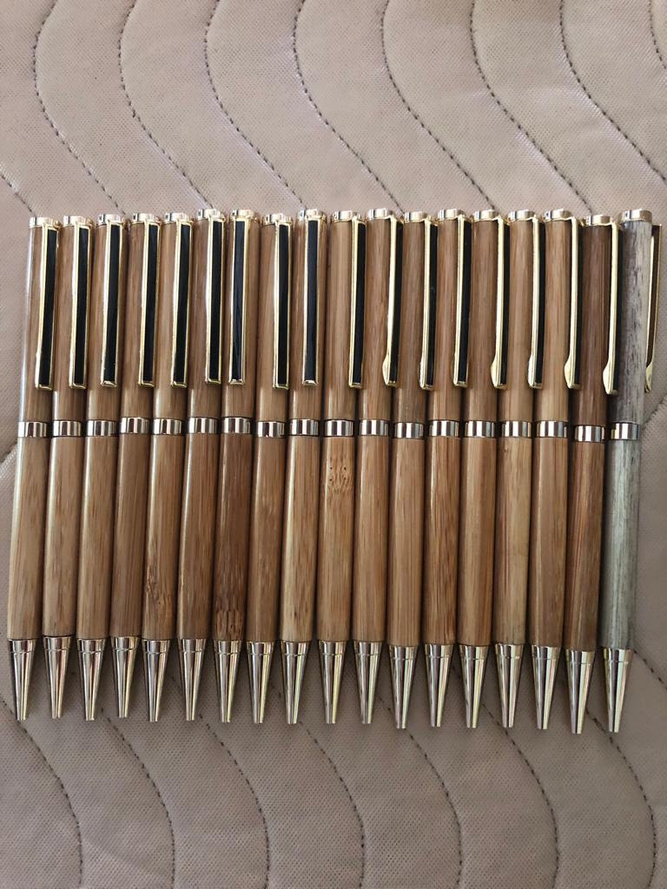

About Spread Eagles Industries
Hand Crafted Bamboo Pens. Manufactured at Spread Eagles Industries.
A Brief History of Spread Eagles Industries
When Mr. kelly retired the premises was bought by Mr.Noel Watson, who continued to supply furniture to "Courts" with his company name now changed to "Find Heart". The managers of "Find Heart" were Noel Watson and Keith McFarlane. Today, Mr.Noel Watson is on the verge of going into retirement from the furniture business and is taking steps to pass the business to his two son's, Omar Watson and Chavonne Watson
Since Mr.Noel Watson became the owner, the factory space has been improved and now occupies 6,400 square feet of ground floor space (80 ft × 80 ft on the ground floor), with plans to establish a second floor at the location. Mr. Watson further changed the name of the business twice (from "M&N" Furnishing to "Spread Eagles Industries")
Spread Eagles Industries is led by a team of experienced furniture industry professionals and craftsmen, who bring a wealth of knowledge and expertise to the company. We are confident that our combination of quality products, sustainable practices, and strong management will drive the success of our company.
Thank you for choosing Spread Eagles Industries. We look forward to working with you.